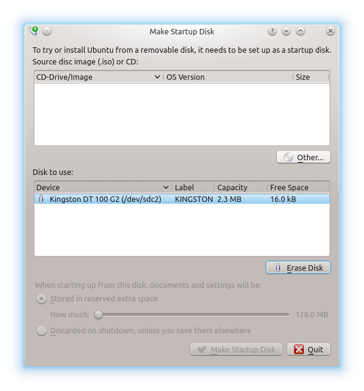
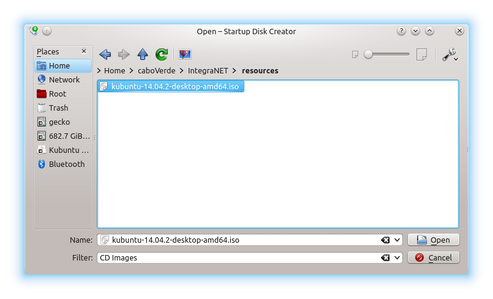
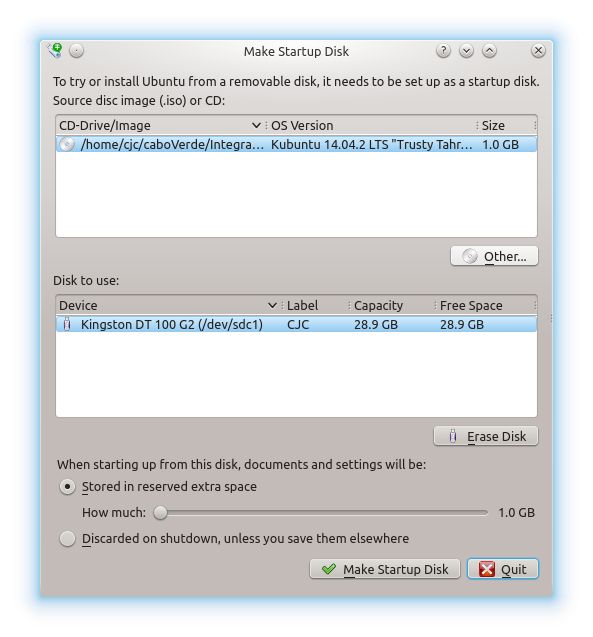
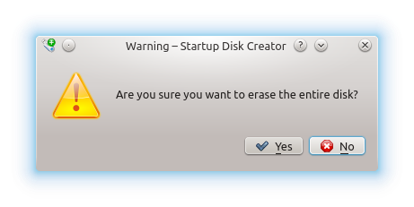
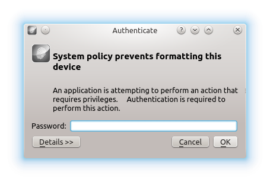
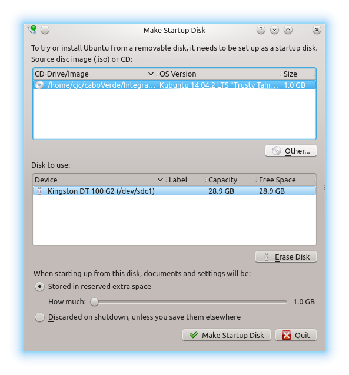
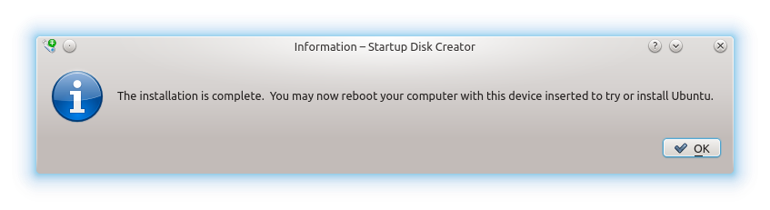

Como instalar kubuntu desde un pendrive
Requisitos:
- Un pendrive de al menos 2Gb
- El archivo ISO de Kubuntu
Todo lo contado aquí puedes encontrarlo en https://help.ubuntu.com/community/Installation/FromUSBStick
Empecemos
Usaremos "usb-creator-kde"
Puedes encontrarlo:
- Pulsando Alt+f2 y escribiendo "Startup Disk Creator"
- En K-menu --> Applications --> System --> "Startup Disk Creator"
- Insertar el pendrive Cuidado, se borrará todo el contenido
- Arrancar usb-creator: 
- En el panel superior seleccionar el fichero .iso pulsando "Other..."
- Se abrirá el panel para seleccionar el fichero 
- Desde "Home" doble-click en los directorios hasta llegar donde tengamos la imagen
- Seleccionar el fichero .iso y pulsar "Open"
- Asegurarnos de tener montado sólo un pendrive 
- Pulsar "Erase Disk" CUIDADO!! se borrará todo el contenido
- Por si acaso nos pedirá confirmación
- Pulsamos "Yes"
- Necesitamos introducir nuestra password
- La escribimos y pulsamos "OK"
- Y ya estamos listos para crear el disco
- Pulsamos "Make Startup Disk"
- Empezará la instalación

- Ahora a esperar a que termine
- En algún momento volverá a solicitar nuestra password

- La escribimos y pulsamos "OK"
- El proceso habrá terminado cuando nos muestre la siguiente información
Enhorabuena
Ya tienes un pendrive con el que instalar kubuntu
Quizás un correo aqui? Volver al índice de tutoriales